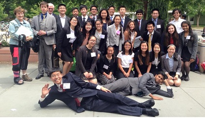

Humanities Clubs
ARTS & CRAFTS CLUB:
The purpose of this club is to gather students who are interested in making handmade crafts, improving their creativity by doing activities such as drawing, puppet-making, cooking, and painting. Meetings are held every Tuesday during lunch in room 217.
DRAMA CLUB
Drama Club was created to bring people who love theatre together. Our main project is the annual Drama Club Showcase at the end of the year, which is completely student-run. Throughout the year, we also arrange field trips to see plays or musicals outside of school, as well as creating games and activities within each club meeting. Our goal is to create a space for the theatre kids of Mills to feel at home. Meet Mondays at lunch in room 1er and Wednesdays after school in the auditorium (every other week).
Presidents --- Chacha Tahng and Henry Gerharz
MOCK TRIAL
Founded over a decade ago, the Mills Mock Trial Club aims to help students acquire a working knowledge of the American Judicial system, develop analytical and communication skills, and gain an understanding of their rights and responsibilities as members of society. Meet Tuesdays 3:30-6:30 in room 146
MODEL UNITED NATIONS
Whether you want to become a more cogent, fluent speaker or want to pursue careers in law or politics, Model United Nations (MUN) helps you improve your public speaking ability and become a better negotiator. As a member, you are able to attend MUN conferences in Stanford, Berkeley, and Davis university campuses. There, you can practice your speaking and negotiating skills as well as your ability to craft comprehensive, effective resolutions to real-world issues given to you ahead of time. Anyone is welcome to be a member of Mills MUN! Meet Fridays at lunch in room 132.
Presidents --- Michael Chang and Annie Lu
PHILOSOPHY CLUB
Mills Philosophy Club is a place for students who are interested in having deep discussions to exchange their ideas and learn more about philosophical topics. Our ultimate goal is not to learn exactly what to think, but rather to acquire the tools necessary to think for ourselves. Stay curious! Meet Mondays at lunch in room 136
TNT BOOK CLUB
TNT (Teachers and Teens) Book Club was formed two years ago to encourage and inspire students to read. The goal of the club is to forge a literary relationship between students and teachers in order to cultivate a reading culture on campus. Meet Fridays at lunch in room 146
VISIONS CLUB
The MHS Visions Club is a group of people who create and collect student art, photography, prose, poems, etc., and work to publish all that in a yearly magazine! Every Thursday we convene to talk about possible fundraisers for the club, and to encourage artistic freedom and individuality. We encourage all students to contribute to our magazine, regardless of whether or not they are club members because, after all, we believe that everybody has their own unique vision that they're just dying to share with the world. Meet at lunch in room 122.
President --- Clifton Lee
WOW CHRISTIAN CLUB
The purpose of WOW Christian Club is to share the love of God with the Mills community and to encourage fellow Christians.Meet Wednesdays at lunch in room 243.